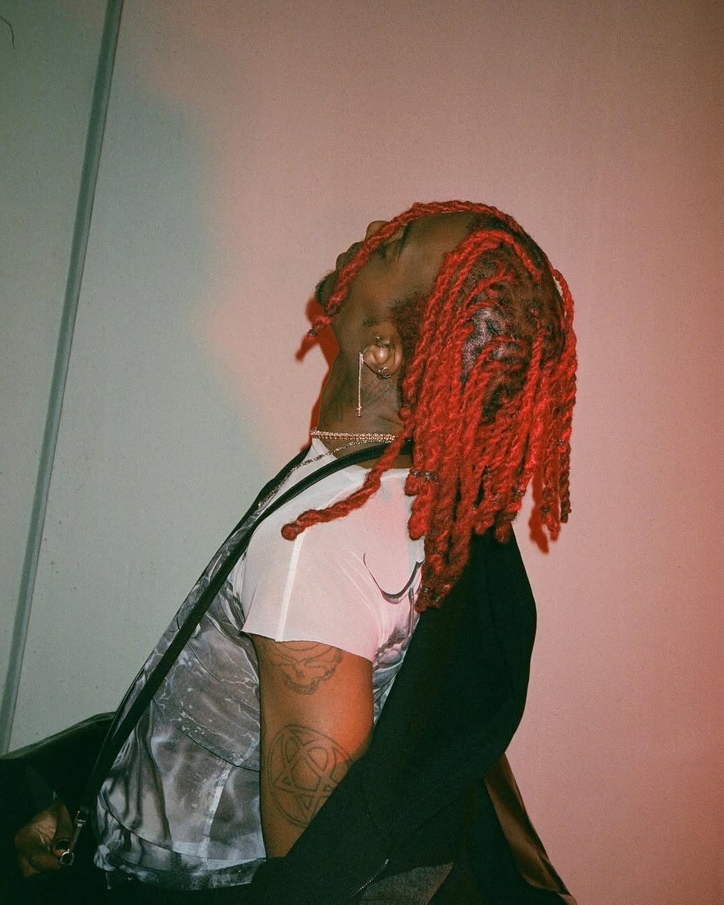
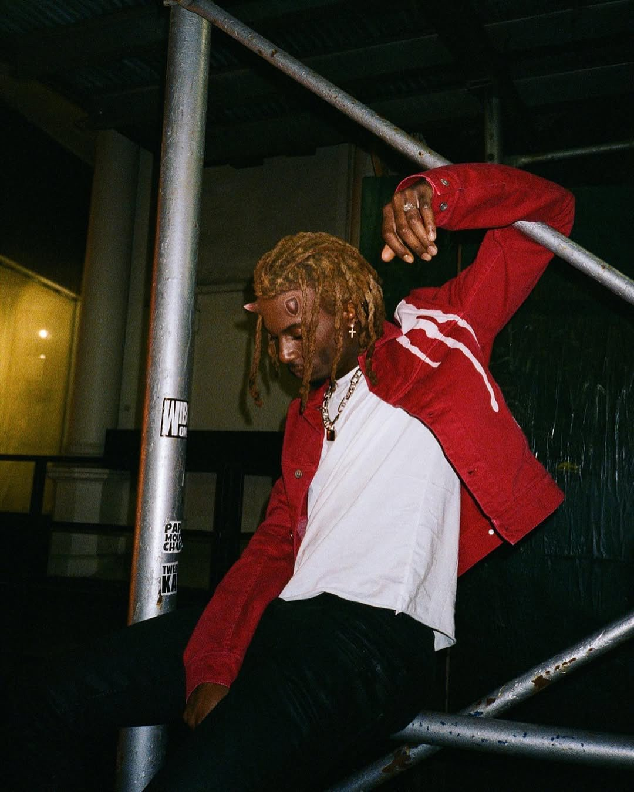

Playboi Carti
 Whole lotta red : the best rap album
the 20's 5 Years anniversary

This album is my favorite rap album of all time:
Whole Lotta Red, a rap album that was inspired by the punk rock
movement and aesthetic. Indeed for this project the rapper changed routes and went from
a more melodic sound on his previous album- Die Lit- to a very raw and electric sound, emphasizing
the use of distorted heavy bass and sharp leads while performing himself alot more differently than before
The entirety of the album was produced by talented rap producers suchas F1LTHY
and my personnal favorite Art Dealer. The surge of new sounds and aesthetic inspired the new underground of today,
the album being the true pioneer of rage, a new rap genre that dominates the market today.
His story
Playboi Carti is a rapper from Altanta that I love because of his style and his
ability of always creating something new to offer us: his sound is raw and expperimental and he is a fearless
creative among the diluted rap scene of the 2020s. I hope you'll have as much fun as I had listening to him
The best songs out of the album
The Tracklist of Whole lotta Red
Rockstar Made 3:13
Go2DaMoon 1:59
Stop Breathing 3:38
Beno! 2:33
JumpOutTheHouse 1:33
M3tamorphosis 5:12
Slay3r 2:44
No Sl33p 1:28
New Tank 1:29
Teen X 3:25
Meh 1:58
Vamp Anthem 2:04
New N3on 1:56
Control 3:49
On That Time 1:42
King Vamp 3:06
Place 1:57
Sky 3:13
Over 2:46
ILoveUIHateU 2:15
Die4guy 2:11
Not Playing 2:10
F33l Like Dying 3:24
| Rockstar Made 3:13 | Go2DaMoon 1:59 | Stop Breathing 3:38 | Beno! 2:33 | JumpOutTheHouse 1:33 | M3tamorphosis 5:12 | Slay3r 2:44 | No Sl33p 1:28 | New Tank 1:29 | Teen X 3:25 | Meh 1:58 | Vamp Anthem 2:04 | New N3on 1:56 | Control 3:49 | On That Time 1:42 | King Vamp 3:06 | Place 1:57 | Sky 3:13 | Over 2:46 | ILoveUIHateU 2:15 | Die4guy 2:11 | Not Playing 2:10 | F33l Like Dying 3:24 |